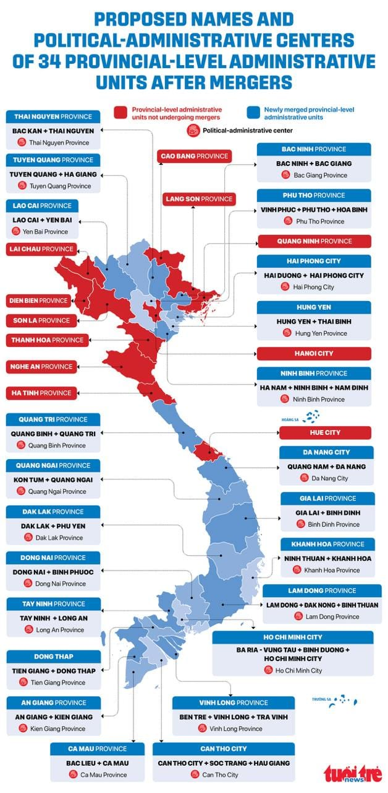

世界苦茶04月16日新闻 | 47条 | 中国一季度GDP同比增5.4%

中国一季度GDP同比增5.4% | 网信办开始整治短视频营销 | 中国学生赴美签证遭遇阻碍 | 韩中重启FTA谈判 | OpenAi将开发自己的X类平台
三个水枪手
苦茶数据
美元兑人民币：7.33（昨日7.31，前日7.31）
美元兑日元：142.30（昨日143.15，前日142.90）
上证指数：3250（昨日3256，前日3267）
标普500指数：5396（昨日5405，前日5368）
比特币：83429（昨日85134，前日85290）
布伦特原油：64.12（昨日64.96，前日64.44）
中国新闻
• 瑞典未证实中船故意破坏 ：瑞典事故调查局星期二公布，瑞典方面展开调查后，并没有找到确凿证据，能证明中国船只故意拖锚损坏两条波罗的海电缆。不过，针对此事展开的另一项调查仍在进行中。据路透社报道，“伊鹏3号”散货船被指在去年11月17日至18日，于瑞典经济水域内拖锚并破坏了两条海底光纤通信电缆，其中一条从芬兰连接到德国，另一条则从瑞典连接到立陶宛。散货船为此接受调查。瑞典检察官索德曼告诉路透社，至于针对此案展开的另一项调查工作，他仍在进行，并拒绝提供更多细节。
• 菲船挑衅中方海警 ：菲律宾海警船被指在黄岩岛（菲律宾称斯卡伯勒浅滩）附近海域，危险接近中国海警舰。新华社报道，菲律宾海警4409船星期一在黄岩岛附近海域危险接近中国海警中南舰，数次从舰艏方向穿越中国船舰行驶航线，“妄图‘碰瓷’摆拍，炮制抹黑我方的虚假叙事”。报道称，中南舰当天上午在黄岩岛附近海域依法巡逻，菲海警4409船在无预告情况下四次穿越中国船舰行驶航线，并突然危险接近中国海警舰。在中国海警多次喊话警告和规制下，菲海警船驶离中国船舰。
• 习近平抵达马来西亚访问 ：中国国家主席习近平已结束对越南的国事访问，续程前往马来西亚。据中国央视新闻报道，习近平星期二乘专机抵达马来西亚首都吉隆坡，开始对马来西亚进行国事访问。习近平抵达马来西亚时发表书面讲话称，访问期间将同马国国家元首苏丹依布拉欣和首相安华，就双边关系及共同关心的国际和地区问题深入交换意见。
• 习近平呼吁抗单边主义 ：中国国家主席习近平在续程到马来西亚访问前，在马国媒体撰文时表示，愿与亚细安国家共同冲破单边主义、保护主义逆流。据央视新闻客户端报道，习近平星期二在赴吉隆坡对马来西亚进行国事访问之际，在马来西亚《星洲日报》《星报》《阳光日报》发表题为《让中马友谊之船驶向更加美好的未来》的署名文章。习近平在文章中指出，中国同马来西亚是隔海相望的友好邻邦，双方要共同努力，让这艘从历史长河中驶来的友谊之船再添动力、行稳致远。
• 中方驳美援助掠夺论 ：对于美国财长贝森特批评中国以援助为名与发展中国家签署“掠夺性协议”，中国外交部回应称，美方无权对中国和拉美国家的合作指手画脚。中国外交部发言人林剑星期二主持例行记者会。林剑说，中国始终是全球南方的重要成员，始终致力于推动全球南方的团结振兴。中国同各国包括全球南方国家开展经贸合作是基于国际规则和市场规律，本质的特征是优势互补、互利共赢，不仅有利于提高发展中国家人民的福祉，也促进了其经济转型升级，给各国的繁荣发展和人民生活带来了实实在在的好处。
• 中国停收波音飞机 ：中国据报下令国内航空公司停止接收美国波音公司飞机，作为在中美贸易战以牙还牙的一部分。彭博社引述不愿具名的知情人士报道，中国也要求当地航空公司停止从美国公司购买任何与飞机有关的设备和零部件。美国总统特朗普本月向全球引爆关税核弹，向中国加征34%关税，4月9日生效。再加上特朗普重返白宫后，以芬太尼问题为由向中国征收20%关税，美国对中国商品的加征关税总和为54%。
• 中方谴责美网络攻击 ：针对哈尔滨市公安局以涉网攻窃密指控，悬赏通缉三名美国特工，中国外交部发言人回应时敦促美国停止对中国的网络攻击。中国外交部发言人林剑星期二在例行记者会上说，在第九届亚冬会期间，美国政府针对赛事的信息系统和黑龙江省内的关键信息基础设施开展了网络攻击，对中国关键信息的基础设施、国防、金融、社会、生产以及公民的个人信息安全造成了严重危害，性质十分恶劣，中方谴责美国政府的上述恶意网络行为。林剑表示，中方已通过各种方式，就美网络攻击中国的关键基础设施向美方表明关切。
• 中国交付最大货柜船 ：全球最大的2.4万箱级双燃料动力货柜船交付，再次刷新中国双燃料集装箱船建造纪录。据中国央视新闻报道，这艘货柜船星期二正式交付，将用于远东至欧洲航线的货物运输。这艘货柜船一次可承载22万吨货物，大约2.4万个集装箱，堆叠高度相当于25层楼。
• 澳门将推重大工程项目 ：澳门计划推出一批具标志性、有带动效应的重大工程项目，包括澳琴国际教育城、澳门国际综合旅游文化区等。据澳门政府网站，澳门特区行政长官岑浩辉星期一发表任内首份施政报告。岑浩辉说，内外环境已经发生并将继续出现深刻复杂变化，澳门作为高度外向型微型经济体难以独善其身，风险挑战不容忽视，必须居安思危，做好应对各种风险挑战的充分准备和预案。
• 网信办启动清朗专项整治 ：中国官方公告，将从即日起开展三个月的清朗行动，整治散布虚假信息等短视频营销问题。中国国家互联网信息办公室星期二在官方微信公众号“网信中国”公告，为进一步深化短视频恶意营销问题治理，营造清朗网络空间，将从当天起，开展为期三个月的专项行动，整治短视频领域恶意营销乱象。公告称，当局将通过开展专项行动，集中整治短视频领域恶意营销突出问题，维护网民合法权益，推动短视频行业健康有序发展。
• 中国出入境人数同比大增 ：中国国家移民管理局发布的数据显示，中国一季度出入境人员同比增逾15%。综合新华网和央视新闻客户端报道，中国国家移民管理局星期二发布今年一季度移民管理工作主要数据，显示中国移民管理机构累计查验出入境人员1.63亿人次，同比上升15.3%。其中大陆居民8027.2万人次、港澳台居民6572.4万人次、外国人1743.7万人次，同比分别上升15.4%、11.2%、33.4%。根据数据，中国移民管理机构一季度共签发普通护照515.3万本、大陆居民往来港澳台证件签注2485.4万，签发港澳台居民来往大陆通行证56.9万张，签发外国人签证证件36.1万证次。
• 夏宝龙警告勿出卖国家利益 ：中共中央港澳工作办公室主任、中国国务院港澳事务办公室主任夏宝龙提醒香港工商界，关键时刻出卖国家利益者，绝不会有好下场。据港澳办官网，星期二是第10个全民国家安全教育日，香港特区维护国家安全委员会早上举办开幕典礼暨主题讲座。夏宝龙通过视频出席开幕礼，并发表主旨讲话。夏宝龙说，过去10年，香港全面贯彻落实总体国家安全观，国安工作取得成就，经济快速发展、社会长期稳定。香港历经由乱到治、由治及兴，极不平凡。他指，2019年港独猖獗，国安受到严重威胁，香港满目疮痍，危急时刻，中央果断出手，力挽狂澜，制定实施香港国安法，实现由乱到治。
• 中国学生起诉美签证取消 ：美国特朗普政府针对外籍高校师生和研究人员升级驱逐出境行动之际，来自加州大学伯克利分校、卡内基梅隆大学等顶尖学府的四名中国学生上周起诉美国政府，指美政府仅凭模糊的国家安全理由终止留学生签证，要求中止其违规做法并立即恢复所有受影响学生的身份。据央视新闻4月12日报道，据法庭文件、律师声明以及全美各学校当地时间4月11日发布的公告，特朗普政府已取消了88所高校至少529名学生、教职员工和研究人员的签证，作为其大规模驱逐出境行动的一部分。报道称，美国国务院正在终止学生和交流访问者项目的记录，并尚未通知大多数大学或学生他们的签证已被取消。
• 海南招商大会签265项目 ：中国海南自由贸易港全球产业招商大会举行，共签约265个项目。据中新社报道，2025年海南自由贸易港全球产业招商大会星期一在海南海口举行，多家世界500强企业、中国500强企业以及民营企业500强企业派出代表出席。本次大会向全球投资者全方位展示了海南自贸港的建设成果、政策优势、投资机遇以及良好的营商环境，共签约项目265个，总签约额约2336亿元人民币。
亚太印太新闻
• 日本拟提高防卫预算 ：日本防长中谷元星期二在记者会上透露，2025年度原始预算的防卫费和相关经费总计9.9万亿日元，相当于2022年度国内生产总值的约1.8%。共同社报道，日本正努力在2027财政年前把防卫费在GDP的占比提高至2%。日本政府在2022年底制定的《国家安全保障战略》等三份安保相关文件中规定，2023年度至2027年度的防卫费总额约为43万亿日元。
• 韩中重启FTA谈判 ：时隔三个月，韩中自贸协定次阶段谈判移师中国首都北京举行。据韩联社报道，韩国产业通商资源部星期二说，韩中自由贸易协定第二阶段第11轮谈判4月15日至18日在中国北京举行。韩国产业部自由贸易协定交涉官权慧珍和中国商务部国际经贸关系司司长林峰，将作为双方首席代表，各率40多人团队参与谈判。在这次谈判中，双方计划协调服务贸易、投资和金融三大领域的协定文案，并就市场准入进行磋商。
• 谷歌地图标注西菲律宾海 ：菲律宾众议院议长罗穆亚尔德斯说，谷歌地图已将菲律宾西部海域标注为西菲律宾海，强化菲律宾对领土完整和主权的主张。菲律宾《每日询问者报》网站报道，罗穆亚尔德斯星期二发表声明指，这一改变或许看似没什么，但它反映了国际社会承认菲律宾西部海域是菲律宾专属经济区的一部分。他说：“在广泛使用的谷歌地图平台上，对西菲律宾海进行正确而且一致的标注，对所有菲律宾人来说是一个好消息。”
• 韩国被列入敏感国家名单 ：韩国被列入美国能源部“敏感国家及其他指定国家名单”相关措施星期二起生效。韩国政府说，正携手有关部门同美国能源部展开磋商，持续进行积极交涉。韩联社报道，韩国产业通商资源部长安德根3月20日同美国能源部长赖特举行会谈，双方商定按照程序尽早解决相关问题。韩国政府人士透露，两国近期进行司局级磋商时，美方重申韩国被列为敏感国家不会影响韩美正在进行或今后将进行的研发合作。对于韩国能否被移出名单，韩国政府说，这将根据美方的内部程序推进，或尚需时日。
• 印尼总统访约旦挺巴建国 ：约旦国王阿卜杜拉二世星期一在安曼会见印度尼西亚总统普拉博沃。普拉博沃说，印尼坚决支持巴勒斯坦人建立独立国家的权利。新华社报道，约旦王宫发表声明说，双方在会谈中讨论了为停止新一轮以哈冲突、恢复停火、允许援助进入加沙地带、支持巴勒斯坦人坚守自己的土地所做的努力，以及在“两国方案”基础上实现公正、全面和平的重要性。普拉博沃说，印尼坚决支持巴勒斯坦人建立独立国家的权利，印尼将与约旦一道捍卫巴勒斯坦人的合法权利。
• 台湾总统赖清德声望下跌 ：台湾民意基金会发布的最新民意调查结果显示，总统赖清德声望跌至就任以来次低。综合台湾《联合报》和中时新闻网报道，台湾民意基金会星期二发布的民调结果显示，针对是否赞同总统赖清德上任近一年处理台湾大事的提问，45.9%受访民众表示赞同，45.7%不赞同，8.5％没意见，1.4%不知道。台湾民意基金会董事长游盈隆表示，造成总统赖清德声望显著下跌的主要短期因素有两个，一个是大罢免的后座力，另一个是美国总统特朗普关税震撼，赖清德的权威正罕见地遭遇社会空前不满与挑战。
• 国民党青年来台涉假罢免案 ：包括国民党立委罗智强办公室主任陈冠安在内的蓝营青年军六人，因涉嫌伪造罢免文书等罪，获准交保，但均被限制出境出海。综合台湾《联合报》《自由时报》《中国时报》等报道，台北地方检察署3月间接到民进党告发，发起罢免绿营立委吴沛忆和吴思瑶的国民党青年军，所递交的罢免提议书含有大量不实签名和“死亡连署”。台北地检署指挥调查局台北调查处清查后，发现确实有人被冒名提案，星期一一早搜索、约谈涉罢免吴沛忆“忆事无成”召集人刘思吟、领衔人李孝亮；罢免吴思瑶“地动删瑶”召集人赖苡任、领衔人张克晋；与刘思吟和赖苡任同属“罢吴四骑士”的陈冠安和满志刚六人。
• 越南拟合并省级行政单位 ：越南公布省级行政单位名称及其省会拟定方案。目前越南共有58个省和5个直辖市。根据4月12日的第60号决议，河内市、莱州省等11个省级行政单位保持不变，剩余52个省级单位将进行合并，最终越南将设立34个省级单位。此外，根据内务部正在完善的行政改革方案，越南地方政府将自7月1日起转为"省级和基层"两级管理模式。除省级行政单位合并外，后续还将取消县级行政架构、推进乡级行政单位合并等。
科技新闻
• 苹果夺全球手机销量冠军 ：市场研究公司Counterpoint Research星期一发布的数据显示，由于iPhone 16的推出，以及在日本和印度等国的强劲需求，苹果在第一季荣登全球智能手机销量榜首。根据路透社报道，Counterpoint的数据显示，尽管美国、欧洲和中国的智能手机销量持平或下滑，但苹果仍占了全球19％的智能手机市场份额；其次是三星，市场份额为18％。苹果股价在早盘上涨5％。
• OpenAI开发类X社交平台 ：据多位知情人士透露，OpenAI公司正在开发自己的类似 X 的社交网络。虽然该项目仍处早期阶段，但据悉存在一个内部原型，专注于ChatGPT图像生成功能，并带有社交信息流。消息人士称，首席执行官萨姆·奥尔特曼一直私下就该项目征求外部人士反馈。尚不清楚OpenAI公司计划将该社交网络作为独立应用发布，还是集成到上月全球下载量最高的应用ChatGPT中。在ChatGPT内部或周边推出社交网络可能会加剧萨姆·奥尔特曼与埃隆·马斯克之间本已激烈的竞争。社交应用还将为 OpenAI 提供 X 和Meta已经拥有的独特的实时数据，以帮助训练其人工智能模型。
• 日本开发RNA修复新药物 ：日本研究人员研发出一种低分子化合物，口服后能修复RNA错误剪接，从而为治疗法布雷病等基因突变引发的罕见遗传病提供新思路。新华社报道，日本京都大学等机构研究人员在新一期美国《科学进展》杂志上发表论文说，RNA经过剪接过程，无用的内含子被剪除，连接上必要的外显子，形成成熟的RNA。RNA剪接如果出错，蛋白质就不能正确合成，诱发多种疾病。因此在药物研发领域，对RNA剪接的控制非常受关注。研究团队介绍，法布雷病是罕见病中的“隐形杀手”，因GLA基因异常导致酶活性缺乏，代谢底物在体内蓄积，引发多系统病变。其中，东亚地区多见的心脏法布雷病的基因突变会在RNA剪接过程中诱导毒性外显子序列插入RNA。
• 美国限制向中国出口H20芯片，Nvidia将承担55亿美元费用 ：Nvidia表示，在美国政府表示该公司需要获得许可才能向中国出口H20人工智能芯片后，公司将承担55亿美元的费用。该芯片一直是Nvidia最受欢迎的芯片之一。Nvidia股价在盘后交易中下跌约6%。该公司表示，美国政府于4月9日通知，H20芯片出口到中国需要获得许可，并于4月14日告诉Nvidia这些规定将无限期实施。
• 人类智力正在显著下降： 据《金融时报》报道，各年龄段人群在注意力集中、推理、解决问题和信息处理等方面正出现明显退化，这些能力正是“智力”所衡量的核心内容。这些结果来自针对青少年和年轻人的标准化认知测试。密歇根大学的“未来监测”研究发现，18岁美国青年的注意力问题日益突出；而国际学生评估项目则显示，全球15岁青少年的学习能力也在下降。多年的研究表明，年轻人正面临专注力缩短、批判性思维能力减弱的问题。
财经新闻
• 中国一季度GDP同比增5.4%、环比增1.2%： 一二三产业同比分别增3.5%、5.9%、5.3%。好于预期 。一季度，城镇居民人均可支配收入 15887元（中位数13450元）同比名义增4.9%、实际增5.0%；农村人均可支配收入7003元（中位数5575元）同比名义增6.2%、实际增6.5%。3月全国城镇调查失业率5.2%，环比降0.2点。企业周均工作48.5小时。一季度规上工业增加值同比增长6.5%、比去年同期加快0.4点。服务业增加值同比增5.3%、比去年同期加快0.3点。3月末商品房 待售面积78664万平、同比增5.1%，其中住宅待售面积42158万平、同比增6.8%。
• 美关税拖垮玩具业 ：新西兰玩具富商莫布雷说，美国总统特朗普的关税政策令他的公司业务瘫痪，唯有提高其商品在美国的零售价。据彭博社报道，莫布雷掌控的Zuru集团在中国制造玩具，在美国零售企业沃尔玛和塔吉特等售卖。特朗普上周宣布对中国输美商品加征关税税率增至145%，令莫布雷的公司陷入困境。莫布雷在洛杉矶接受电访时说：“以目前的关税税率，玩具的零售价必须近乎翻倍。我们有80%的玩具在中国制造，所以处境跟多数竞争对手一样。特朗普或将偷走美国各地家庭和孩子的圣诞节。”
• 耶伦警告美中脱钩风险 ：美国前财长耶伦警告，美中之间的关税水平几乎阻断了贸易，如果维持这样的高关税，将导致全球最大的两个经济体实际上脱钩。她并表示，相信中国希望“让这场冲突降级”，不会抛售持有的美国国债。耶伦星期一接受彭博电视节目Balance of Power采访时称，美国总统特朗普关税政策的理由“不明确，也完全不合理”。她指出，最近债券市场的动荡和美元走软反映了“信心的丧失”，不过事情还未发展到美联储需要干预的地步。特朗普4月2日以来不断加码升级对中国的关税战，加上之前因芬太尼问题已加征的20％关税，本届美国政府对华商品加征的关税税率高达145%。此举招致北京反制，将进口自美国的商品关税调高至125%。
• 阿根廷汇率大幅贬值 ：阿根廷星期一实行区间浮动汇率制度后，首个交易日阿根廷比索对美元汇率大幅贬值。新华社报道，阿根廷国家银行公布的官方汇率显示，星期一收盘时美元对阿根廷比索买入价为1比1180，卖出价为1比1230，较前一交易日的1比1037.5和1比1097.5分别上涨13.73%和12.07%。阿根廷经济学家古铁雷斯认为，阿根廷比索贬值是政府实行区间浮动汇率的必然结果，因为这意味着政府大幅放松汇率管制。此前，阿根廷采取的汇率制度是使货币以每月约1%的速度缓慢贬值。未来，随着阿根廷农矿业出口高峰期到来，阿比索汇率可能走强。此外，阿根廷政府今年预计将获得大量国际融资，具备维持汇率基本稳定的能力。
• 瑞银预测中国经济放缓 ：瑞银集团称，由于美国加征关税抑制出口，中国今年经济增长预计仅为3.4%。据彭博社报道，包括汪涛在内的瑞银经济学家星期二在一份报告中写道，关税冲击对中国的出口构成前所未有的挑战，中国的国内经济也将进行重大调整。瑞银是主要银行中对中国经济前景最为悲观的，该行此前预计中国2025年经济增长为4%。
• 亚细安三国增长或放缓 ：亚细安加三宏观经济研究办公室星期二说，美国关税措施带来巨大不确定性，在美国政府于4月2日宣布大规模加征关税后，预计亚细安加三经济体区域增长率可能在2025年跌破4%，并在2026年进一步放缓至3.4%。美国“解放日”之前，AMRO预计亚细安加三区域在2025年和2026年将实现4.0%以上的增长，主要由强劲的内需、投资回升及低且稳定的通胀支撑。AMRO分析指出，在初步的“解放日”情况下，该区域增长可能在2025年降至4.0%以下，2026年进一步下滑至3.4%。
• 雷克萨斯上海独资建厂 ：日本车企丰田汽车旗下的高端品牌雷克萨斯摘得中国上海市金山区一个地块，将独资建厂。据澎湃新闻报道，上海土地交易市场显示，雷克萨斯新能源有限公司于4月1日竞得上海市金山区一宗工业用地，该地块占地约112.78万平方米，容积率2，成交价13.534亿元人民币。出让公告显示，上述地块要求项目投资强度为842万元/亩，也就是说，雷克萨斯上海工厂在该地块的固定投资将不低于142.4亿元。
• 中方促合作拒脱钩 ：中国外交部发言人林剑星期二表示，面对外部不确定性，中国将坚持“握手”而非“挥拳”、“拆墙”而非“筑垒”、“联通”而非“脱钩”。面对当前关税战、贸易战阴霾，中国本月举办多场商贸活动，上周末消博会开幕，星期一海南自贸港全球产业招商大会举行，星期二广交会也在广州启动。林剑星期二在例行记者会上表示，这些活动的成功举行，展现了各方加强经贸合作，抵御单边主义、保护主义的决心和信心。
• 哪吒汽车欠薪CEO赴英引关注 ：中国国产电动车品牌哪吒汽车近期陷入运营危机，网传公司原CEO张勇已前往英国，引发外界关注。多名前员工透露，公司累计拖欠补偿、应付款项近4亿元人民币，涉及员工超3000人。张勇星期一则在朋友圈发文，未否认人在英国，称：“感谢大家关心，至今仍担任哪吒汽车顾问，为公司四处奔波融资。”中国媒体“Tech星球”星期一引述知情人士披露，张勇离职前就办理英国签证，近期他已去到英国，“目前还在那里”。
• 白宫称贸易对话的球在中国一方，特朗普对达成协议持开放态度 ：白宫发言人莱维特周二表示，美国总统特朗普对与中国达成贸易协议持开放态度，但北京应首先采取行动。“球在中国手中：中国需要与我们达成协议，我们不是必须要与他们达成协议，"莱维特在新闻发布会上表示，"中国想要我们所拥有的...美国消费者，或者换一种说法，他们需要我们的钱。”白宫表示，美国总统特朗普签署了一项行政令，对美国依赖进口的已加工关键矿物展开国安风险调查。
• 美国3月进口物价意外下降，但关税恐很快开始刺激通胀 ：受能源产品价格回落推动，美国3月进口物价意外下降，这是表明美国总统特朗普的全面关税政策生效前通胀在缓解的最新迹象。劳工统计局称，3月进口物价环比下降0.1%，为9月以来首见，同比为上涨0.9%。从中国进口的价格在2月环比下降0.1%之后，3月下降0.2%，同比下降0.9%。进口物价数据巩固了经济学家的预期，即剔除食品和能源的个人消费支出(PCE)物价指数在2月环比上升0.4%后，3月将微升0.1%。
• 中国海关总署召开进出口企业、行业协会商会座谈会，将帮企业渡难关稳订单 ：中国海关总署召开进出口企业、行业协会商会座谈会。海关总署署长孙梅君在会上表示，海关将着力提升通关便利化水平，加强政策供给，支持企业走出去；加强常态化关企沟通交流，帮助企业解难题、渡难关，稳订单、拓市场，进一步促进外贸稳定发展。
• 加拿大将给汽车和特定行业制造商免除部分针对美国进口商品的反制关税 ：加拿大财政部表示，在满足某些条件的情况下，将给予在国内生产的汽车制造商和特定行业的制造商一些反制关税豁免。财政部表示，如果在加拿大生产的汽车制造商继续在当地生产汽车并完成计划中的投资，将允许他们进口一定数量的美国组装的、符合自由贸易标准的汽车。财政部在声明中表示，政府将对从美国进口的、用于在加拿大制造、加工及食品饮料包装的商品给予为期六个月的关税减免。
• 美国施压欧盟与中国“脱钩”以换取减免关税： 据多名高级消息人士证实，美国在与爱尔兰副总理西蒙·哈里斯上周访问华盛顿并会见美国商务部长霍华德·卢特尼克后，向欧盟高层官员发出了新的简报。这些简报表明，美国在未来的贸易谈判中，将要求欧盟在美中之间做出选择。这些信息较以往更加明确地揭示了美国的终极目标：推动对华经济脱钩。简报指出，任何想与美国达成贸易协定的国家，都必须与北京保持距离。
俄乌战争
• 特朗普特使称普京愿和谈 ：美国总统特朗普的特使威特科夫星期一说，俄罗斯总统普京对于与乌克兰达成永久和平协议持开放态度。特朗普一直试图促成交战三年多的俄罗斯和乌克兰同意停火。尽管俄罗斯和美国官员多次进行谈判，但俄罗斯至今并未做出任何重大让步。威特科夫上星期五在俄罗斯圣彼得堡与普京会晤，这是两人自特朗普1月重返白宫以来的第三次会面。
• 德国或向乌提供远程导弹 ：德国候任总理默茨暗示可能向乌克兰提供远程导弹，克里姆林宫警告这番言论将加剧紧张局势。路透社报道，克里姆林宫发言人佩斯科夫星期一在每日简报会上说，从默茨的言论中可以明显看出，默茨将主张采取“更强硬的立场”，而这必然会导致俄乌局势进一步升级。他说：“不幸的是，欧洲各国政府似乎不愿寻求和平谈判的途径，反而倾向于进一步煽动持续战争。”
• 中国战俘称俄军远不如宣称强大： 两名被俘的中国公民表示，俄罗斯“用谎言喂养”他们，普京的军队并不像声称的那样强大。这两人名为王冠中和张仁波，本月早些时候在乌克兰东部为俄罗斯作战时被俘。在乌克兰国家通讯社Ukrinform组织的一场记者会上，他们被戴着手铐、身穿军装出席。两人表示：“俄罗斯喂给我们的一切都是谎言，都是假的。俄罗斯没有他们说的那么强大，乌克兰也没有他们说的那么落后。”
• 若总统出席普京胜利日阅兵，欧盟将中止塞尔维亚入盟进程： 如果塞尔维亚总统亚历山大·武契奇下月赴俄参加普京的胜利日阅兵，该国可能被阻止加入欧盟。据俄罗斯国家媒体报道，武契奇将作为外国贵宾之一出席5月9日的庆典，并可能提供军事装备支持。对此，欧洲官员警告武契奇，若成行，将违反欧盟的入盟标准，严重破坏塞尔维亚的入欧前景。爱沙尼亚外交部秘书长乔纳坦·维瑟维奥夫表示：“我们必须让他们明白，某些决定是要付出代价的。其后果就是无法加入欧盟。”
其他新闻
• 新西兰强调美关系重要性 ：新西兰外交部长彼得斯说，新西兰与美国的伙伴关系仍然是新西兰最重要的伙伴关系之一，尤其是考虑到双方在太平洋地区的共同利益以及不断变化的安全环境。路透社报道，美国印太司令部司令帕帕罗星期一在檀香山史密斯营的美国印太司令部总部接待彼得斯。彼得斯也是新西兰副总理。彼得斯率领一个高级政治代表团访问夏威夷，以展示新西兰对太平洋伙伴关系的承诺。彼得斯在结束访问后发表声明说，新西兰与美国在太平洋地区的联系比以往任何时候都更加重要，此次行程更凸显出双方共同的波利尼西亚传统和战略利益。
• 特朗普提议将部分美国公民遣送至萨尔瓦多，引发法律争议： 美国前总统唐纳德·特朗普周一表示，他希望将部分暴力犯罪的美国公民遣送到萨尔瓦多的监狱服刑。专家指出，这一举措将违反美国法律。特朗普的言论被认为是他迄今为止最明确地表示，自己有意将归化入籍或出生于美国的公民驱逐出境。这一提议令民权组织感到震惊，许多法律学者也认为这违反宪法。特朗普表示，只有在政府认定其合法的前提下他才会实施这一想法。目前尚不清楚美国公民在被遣送到一个曾被美国指控存在严重人权问题的国家前，将获得何种程度的正当法律程序。在萨尔瓦多总统布克尔访问白宫期间，特朗普对记者表示：“我们必须遵守法律，但我们也有本土的罪犯，他们把人推下地铁轨道，趁老太太不注意用棒球棍打她们的后脑勺，这些人就是彻头彻尾的恶魔。”